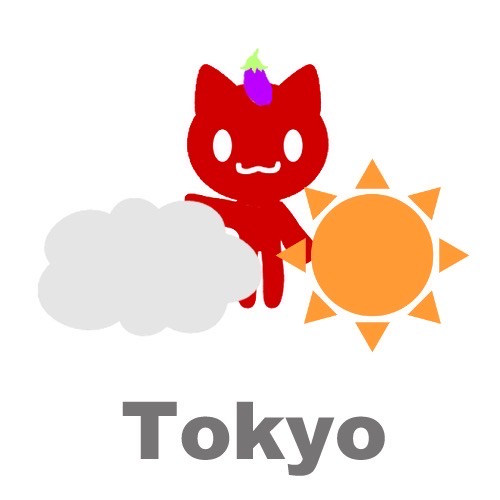

Welcome🍀
Japan is a wonderful place—you should definitely visit!
This website shares Japanese culture, traditional foods, and small everyday thoughts.
It might give you a little taste of traveling in Japan.
This site is ad-free, and I earn absolutely no affiliate commissions or profits.🍀✨
✨Japanese Traditional Song🎹✨Updated(June 26)🆕✨ → About Me→ Explore

Today's Japan Notes📝
Japan's moody weather today⁉︎☀️ (Whimsical update😗 )
Japan's moody weather today⁉︎☀️ (Whimsical update😗 )
June 30:

July 1:
🌟The rainy season has begun throughout Japan, from the Tohoku region southward. (June 20)☔️
🌟Stay hydrated and take care in the summer heat!⚠️🥤
🌟The current trend in Japan is “Beware of Bears Nationwide.”🐻 ⚠️
Especially in mountainous areas, bears have been appearing with unprecedented frequency since around last year. Please be extra careful if you're heading into the mountains. ⛰️🙏